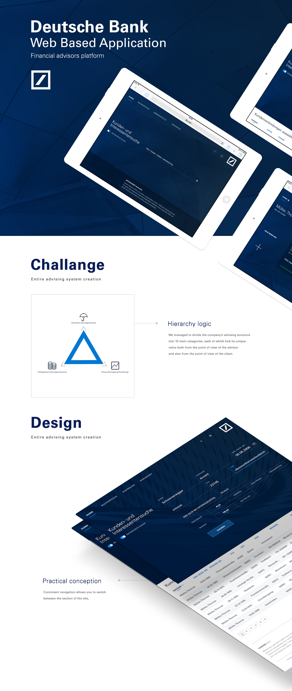
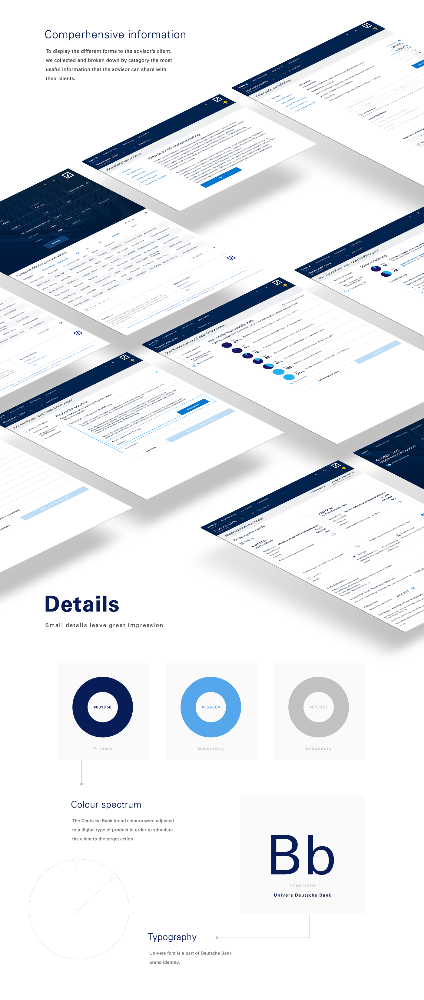

Deutsche Bank Advisors Platform
A connected workspace to help financial advisors navigate client context and ongoing work.
- Project scope
- End-to-End
- Role
- Product Designer
- Client
- Deutsche Bank
- Date
- 2016
A connected workspace
Advisory work brings together client information, conversations, and follow-up tasks. A unified platform can help advisors move between these parts of their work while keeping the relationship as the central context.
The experience should make it easier to understand what needs attention without forcing people to reconstruct the client story across disconnected tools.
Client context at a glance
Give advisors a clear starting point for each relationship: the information that matters, recent activity, and the next steps that keep work moving. Organize details in layers so the overview remains scannable while deeper context is easy to reach.
- Keep key client details close to related activity.
- Make outstanding follow-ups easy to identify.
- Use consistent patterns to make information easier to scan.
Supporting advisory workflows
Design workflows around the way advisors prepare, meet, and follow up. Clear transitions between these moments help preserve context and make it easier to pick up work where it left off.

